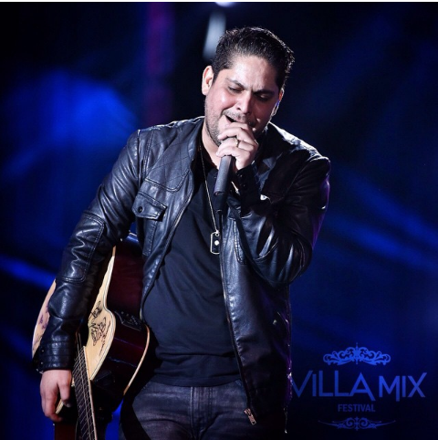
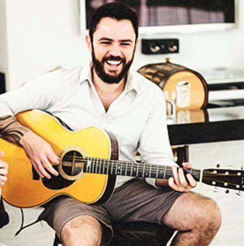
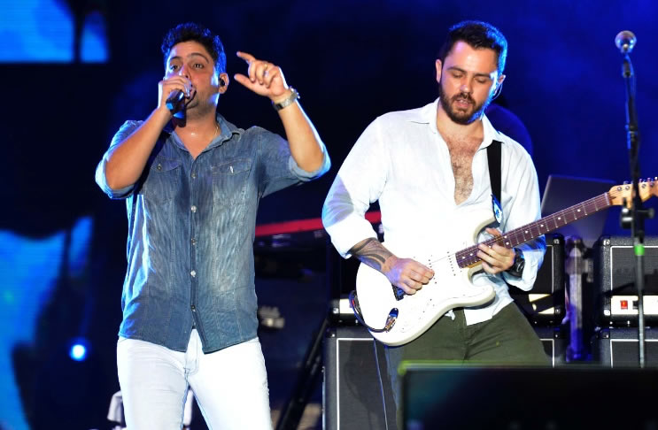
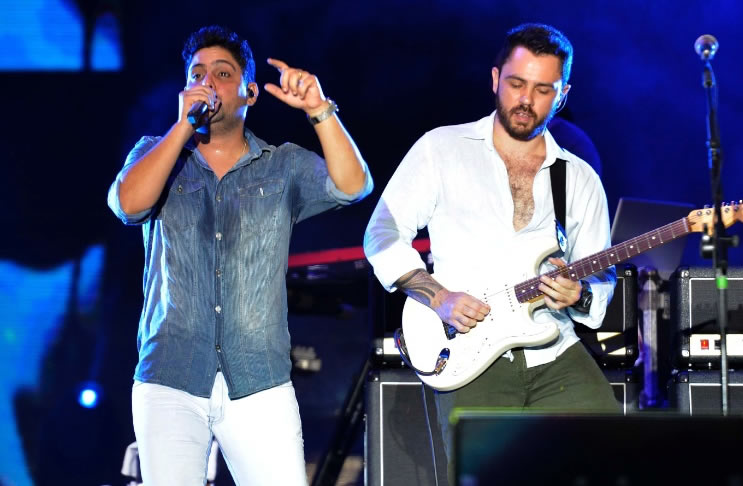
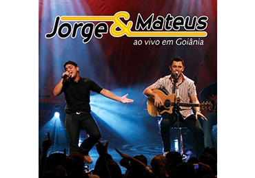
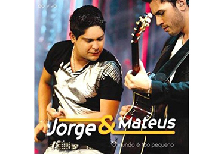
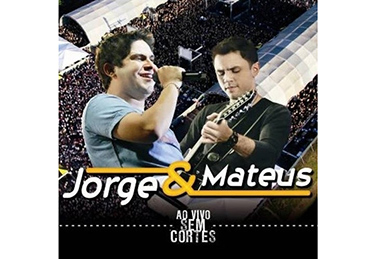
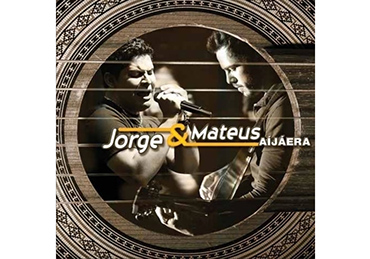
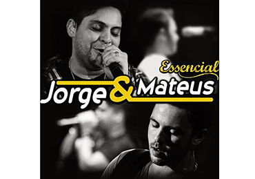
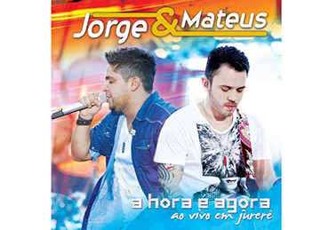

Responsáveis por algumas das levadas mais animadas do sertanejo universitário, como “Pode Chorar”, “De Tanto Te Querer”, “Voa Beija Flor”, “Querendo Te Amar”, “Amo Noite E Dia”, entre outras, os goianos Jorge & Mateus, da cidade de Itumbiara, interior de Goiás, ganharam projeção nacional e, hoje, são considerados uma das principais duplas sertanejas do Brasil. Foi através de um amigo em comum, em 2005, que Jorge, estudante de Direito que participava, sozinho, de muitos festivais de música, e Mateus, que cursava Agronomia e também se apresentava em festas e festivais de música, tiveram a oportunidade de cantarem juntos em um churrasco de amigos. A sintonia foi tão forte, que os músicos passaram a fazer shows como dupla. A primeira apresentação foi em 26 de maio de 2005, numa boate da cidade de Itumbiara para um público universitário. Considerada a principal dupla sertaneja da atualidade, seja por repertório, faturamento ou público, são responsáveis por boa parte dos grandes sucessos do chamado "sertanejo universitário" como "Logo Eu", "Amo Noite e Dia", "Calma", "Nocaute", "Flor", "Aí Já Era", "A Hora é Agora", "Voa Beija Flor", "Vou Fazer Pirraça", "Eu Quero Só Você", "De Tanto Te Querer", "Pode Chorar", "Enquanto Houver Razões", "Seu Astral", "O Que é Que Tem?", "A Gente Nem Ficou", "Amor Covarde", "Chove, Chove", "Tempo ao Tempo", "Os Anjos Cantam", "Sosseguei", "Ou Some ou Soma", " Pra Sempre Com Você ", " Louca de Saudade ", " Paredes ", " Vou Voando " além da regravação de "Amor Pra Recomeçar". Atualmente suas músicas estão entre as mais tocadas nas rádios brasileiras, também entre as mais acessadas e baixadas da internet, liderando o ranking dos artistas mais acessados nos maiores portais (sites) de música do país. Gravaram um de seus últimos DVDs em dos um dos palcos mais renomados da música, o Royal Albert Hall, emLondres, na Inglaterra, onde nenhum artista brasileiro havia pisado e grandes ícones da música internacional cantaram, como os The Killers e Adele, tendo a última também gravado um DVD nesse palco. Juntamente com Roberto Carlos, Ivete Sangalo e Wesley Safadão são os artistas musicais com o mais alto cachê da música brasileira, cobrando no mínimo um total de 500 mil reais por show. Atualmente Jorge é casado com a goianiense Ana Carolina Freitas, e Mateus casado com Marcella Barra. De forma única e intensos em suas interpretações que encantam multidões, Jorge & Mateus, que são empresariados pela ÁudioMix, reforçam em “Os Anjos Cantam” o desejo de viver e procurar trazer novidades para o público através de suas canções. Acompanhados por Juliano Gomes (bateria), Luiz Henrique Silva (guitarra e violão), Alfredo Liduário (guitarra), Ekton Silva (percussão), Leomar da Silva (baixo), Marciano Santos (teclado), Reniones Dias (sanfona) e Anaclea Melo e Neuliene Marques (vocais), Jorge & Mateus, com dez anos de uma carreira marcada por grandes sucessos, seguem com a promessa de levar o seu show para muitas cidades do Brasil.
| FOTO | NOME | DATA DE NASCIMENTO | LOCAL DE NASCIMENTO | RELIGIÃO | ATIVIDADES | UM SONHO | UMA QUALIDADE | DEFEITO |
|  | Jorge Alves Barcelos | 27 de agosto de 1982 (34 Anos) | Itumbiara-GO | Espírita | Compor | Realização profissional | Humildade | Ser muito ansioso |
|  | Mateus Pedro Liduario de Oliveira | 15 de julho de 1986 (30 Anos) | Itumbiara-GO | Católico | Tocar e Compor | Realização profissional | Sinceridade | Sou meio preguiçoso |
 


Ao Vivo em Goiânia - 2007Tem Nada a Ver/ Te Cuida Coração; Fogueira; Amor Não é Jogo de Azaer; Paixão Goiana; Castigo; Morena Proibida; Querendo te Amar; De Tanto te Querer; Pode Chorar; Tá Faltando Amor; Chora Viola/ Caminheiro/ Ladrão de Mulher/ O Campeão; A Vaca Já Foi pro Brejo; Me Leva; Traz Ela de Volta Pra Mim; Espinhos na Cama/ Avião das Nove; Te Amo Tanto Que Nem Sei; Meu Desespero; Goiânia Me Esera; Do Brasil à Argentina (Tô Indo te Buscar); Cavaco de Pau. |

O Mundo é Tão Pequeno - 2009Vou Fazer Pirraça, Espelho; Um Dia Te Levo Comigo; Pra Nunca Dizer Adeus (Princesa); Voa Beija-flor; Mistérios; Amor Covarde; Onde Haja Sol; Saudade; O Mundo é Tão Pequeno; Se Eu Pedir Cê Volta?; Só Eu Sei; Não Sai da Minha Vida; Mania de Te Amar; Só Falta Você, Violeiro Feliz. |

Ao Vivo Sem Cortes - 2010Vou Fazer Pirraça, Querento Te Amar; Tem Nada a Ver/ Te Cuida Coração; Amor Não é Jogo de Azar; Se Eu Pedir, Cê Volta?; O Mundo é Tão Pequeno; Onde Haja Sol; Traz Ela de Volta Pra Mim; Só Falta Você; Mistérios; Voa, Beija-flor; Nova York; Um Dia Te Levo Comigo; Bebo pra Carai; Eu Bebo Sim/ Mal Acostumado; De Tanto Te Querer; Espelho; Goiânia Me Espera; Amor Covarde; Eva/ Ilariê/ Tindolelê. |

Aí Já Era - 2010Seu Astral; Amo Noite e Dia; Chove, Chove; Tempo ao Tempo; Se Eu Chorar; Esquece o Medo e Vem; Cilada; Volta pra Minha Vida; Anjo da Guarda; Mil Anos; Alguém no Seu Lugar; Pra Ter o Seu Amor; Vestígios; Aí Já Era. |

Essencial - 2012Duas Metades; Seu Astral; Amo Noite e Dia; Voa Beija-flor; Amor Covarde; Aí Já Era, De Tanto te Querer; Vou Fazer Pirraça; Pr Que Entender?; Mania de Te Amar (ao vivo); Pode Chorar (ao vivo); Espelho (ao vivo); Onde Haja Sol (ao vivo); Te Amo Tanto Que Nem Sei (ao vivo); Mistérios; Um Dia Te Levo Comigo; (ao vivo); Traz Ela de Volta Pra Mim (ao vivo); O Mundo é Tão Pequeno (ao vivo); Querendo te Amar (ao vivo). |

A Hora é Agora - 2012A Hora é Agora; Enquanto Hourver Razões; Flor; Por Quê?; Prisão Sem Grades; E O Que é Que Têm?; Eu Quero Só Você; Pra Que Entender?; Eu Quero Ser o Teu Sol; Passa Esse Modão; Cartaz; Diga Sim; Invasões; Não Demore a Perceber; A Gente Nem Ficou; Onda; Duas Metades; Cíclo. |